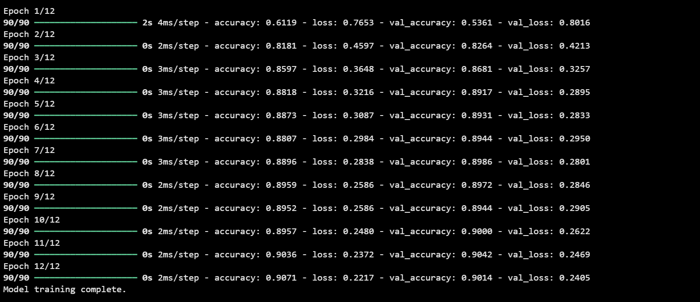
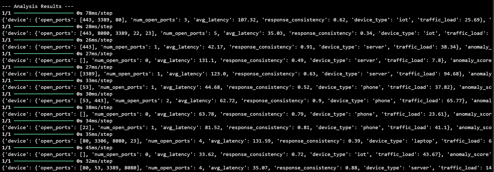
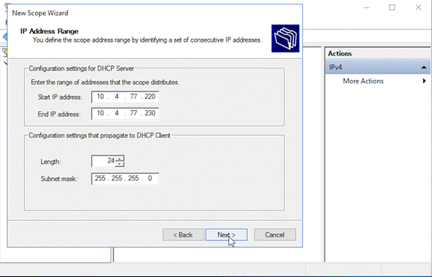
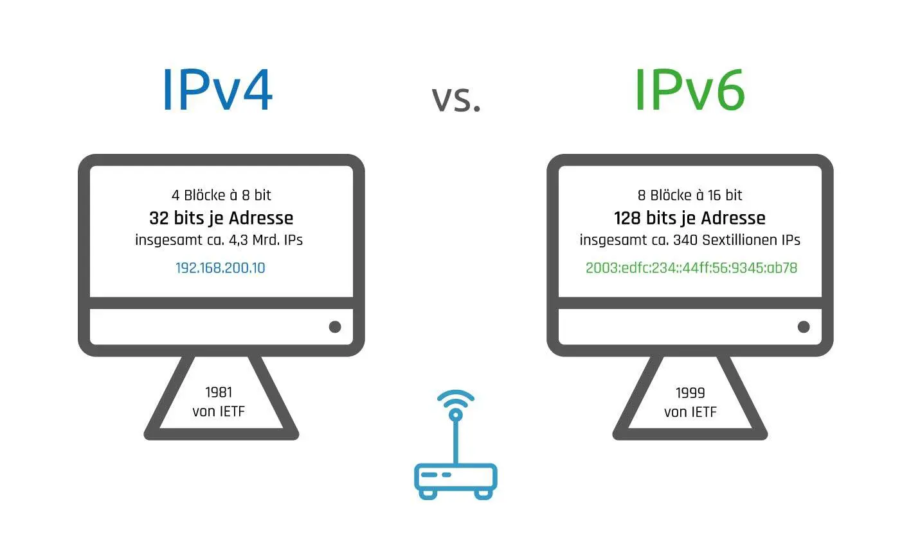
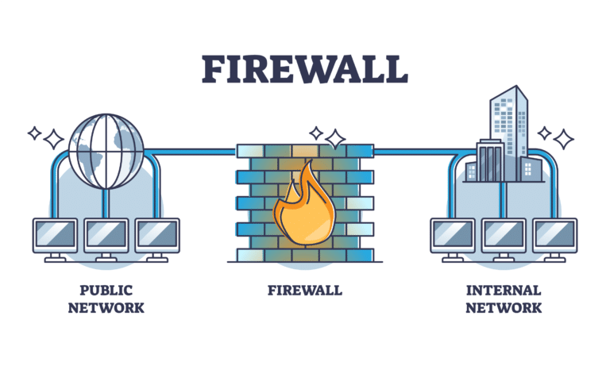

Machine Learning
The backend component of our network-security capstone project merges a simulated router and a neural
network-based anomaly detection model to create intelligence for our project. By synthesizing the data
produced by the simulated router on several aspects of network device activity—open ports, latency,
response consistency, traffic load, and device types—we avoid scanning real networks and instead generate
controlled test cases for development. This simulated data is processed through a feature-extraction
pipeline and converted into numerical vectors suitable for machine-learning models. A TensorFlow/Keras
neural network has been trained on these vectors to identify normal, risky, or harmful network configurations.
After training, the model can analyze newly generated simulated router data and produce an anomaly score
along with a classification of whether the router is behaving normally. The anomaly score helps determine
device risk, while the classification guides the scanner toward identifying up-to-date security threats.
This component provides an authentic testing environment and a smart anomaly-detection capability.
Currently, this tool is only for educational and exploratory use and does not connect directly to the
scanner. It demonstrates how network attributes become machine-learning features and how a neural network
learns to classify simulated network configurations. This prototype system introduces students to data
preprocessing, supervised learning, anomaly detection, and the connection between configuration and
security risk. As it expands, it will support deeper cybersecurity learning and the development of
intelligent computational tools.


Implementation
Web-Based Network Information Tool
This project was developed as part of a broader hands-on networking and systems
research environment. Alongside the web application, a dedicated
Windows Server 2025 instance was deployed on a separate laptop
to simulate a realistic enterprise setup. The server was fully configured with
Active Directory Domain Services, DNS, and
DHCP scopes to support domain operations and provide a controlled
platform for testing how client devices obtain and report network configuration details.
The intention was to create a structured environment for studying fundamental network
behaviors and designing a lightweight, web-based information tool.
Front-End (Client-Side)
The front end is built with HTML, CSS, and JavaScript. The interface collects:
- The user's full name.
- A brief explanation of why the tool is being used.
After input validation, the browser sends a structured JSON request to the backend:
POST http://localhost:3000/scan-self
{
"fullName": "...",
"reason": "..."
}
Once the response is received, the interface displays key network information from the
local machine, such as:
- IPv4 address
- Default gateway
- DNS server assignment
- MAC address
- DHCP configuration status
Back-End (Server-Side)
The backend is implemented using Node.js with the Express framework.
It processes incoming requests, executes controlled system-level commands, and returns
parsed network information to the browser. All activity is logged to maintain clarity,
traceability, and responsible usage.
express — provides routing and static file delivery.cors — manages browser communication.child_process.exec — retrieves local network details through system commands.fs — stores detailed request logs in logs.json.
POST /scan-self
This endpoint ensures all fields are present, processes the system output, extracts
relevant values, and logs a complete entry in the audit file:
{
fullName: "...",
reason: "...",
timestamp: "...",
networkDetails: {
ipv4: "...",
gateway: "...",
dns: "...",
mac: "...",
dhcp: "..."
}
}
These logs create a clear, maintainable record of usage while ensuring all operations
stay fully local and do not interact with or scan external systems.
Educational & Research Value
The combination of a configured Windows Server 2025 environment and this browser-based
tool provided a structured platform for exploring how clients receive network assignments,
how directory services behave, and how system-level networking data can be safely
extracted and visualized. The goal was to design a small-scale prototype inspired by
real administrative tools—focusing on clarity, accountability, and controlled behavior.
Network Familiarity
Windows Server:
Windows Server manages users, computers, and resources in enterprise environments.
It provides a safe testing ground for domain networking.
DHCP (Dynamic Host Configuration Protocol):
Assigns IP addresses automatically, preventing conflicts and saving time.
DHCP Scope:
Defines the range of IP addresses a server can assign.

DNS (Domain Name System):
Converts names into IP addresses and is required for Active Directory to function.
Active Directory (AD):
Manages users, authentication, and permissions for enterprise networks.
IP Address:
A unique identifier allowing devices to communicate.

ISO:
A disk image used to install operating systems or create VMs.
Firewall:
Controls allowed and blocked network traffic.

Relevance:
This environment builds real-world networking and server administration skills.